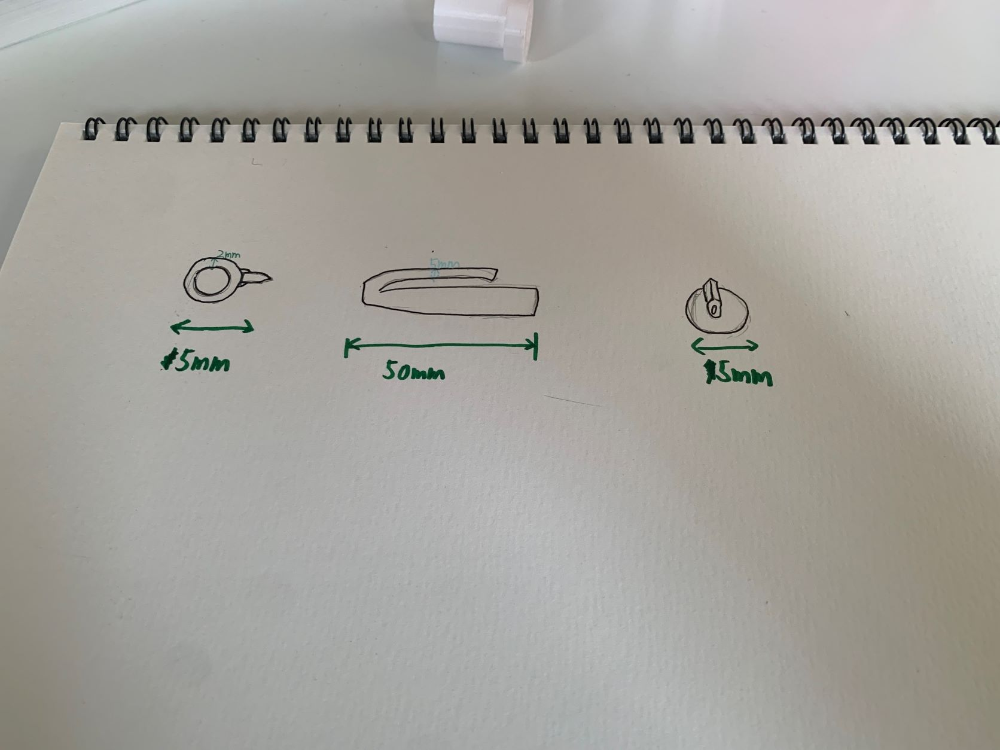
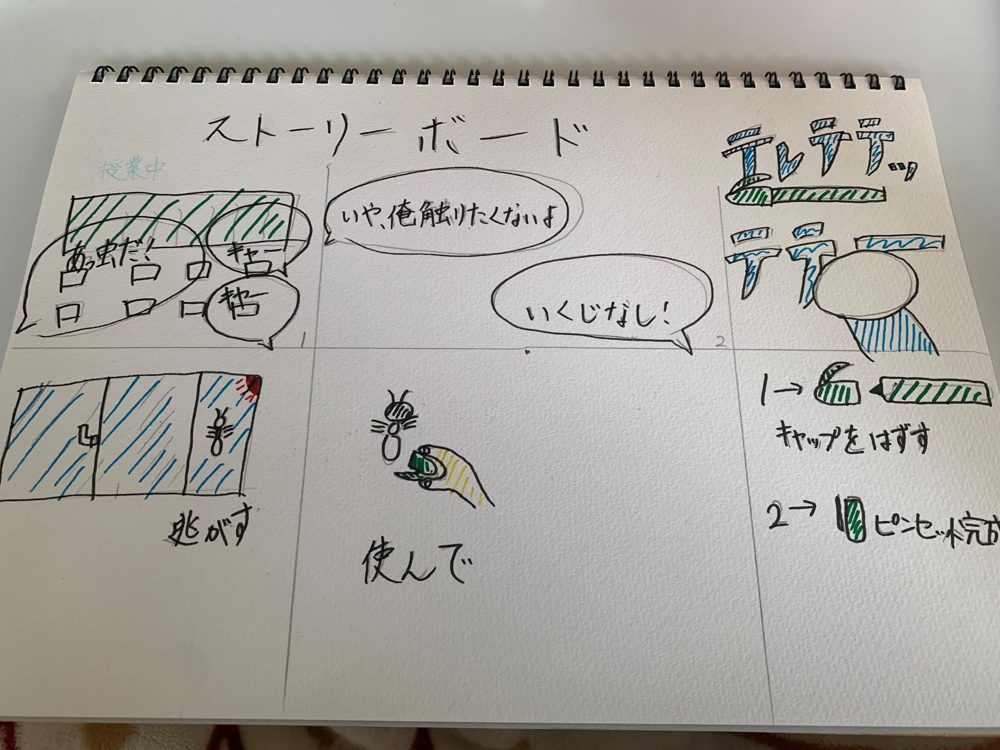
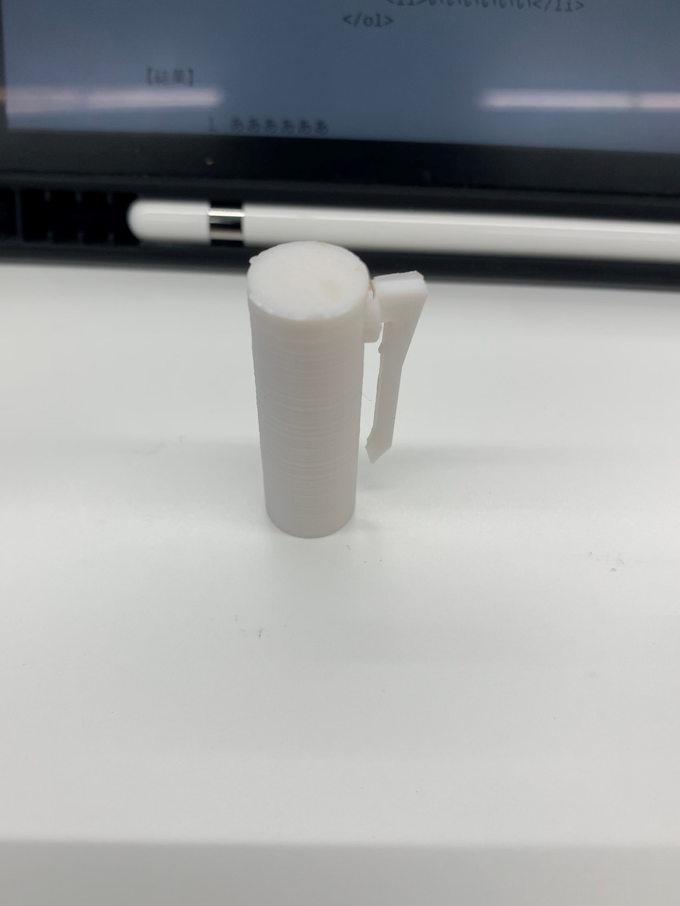
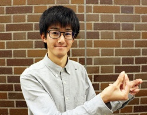
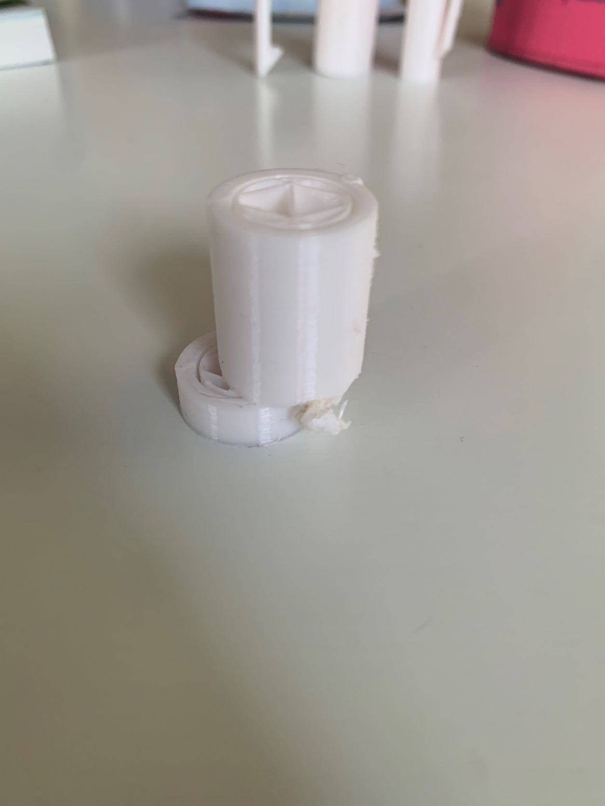
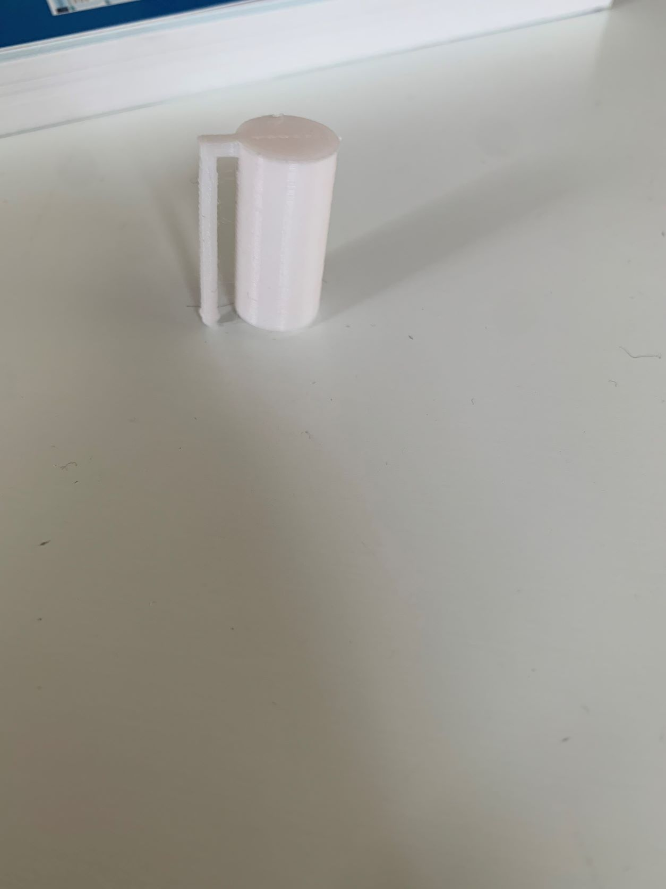
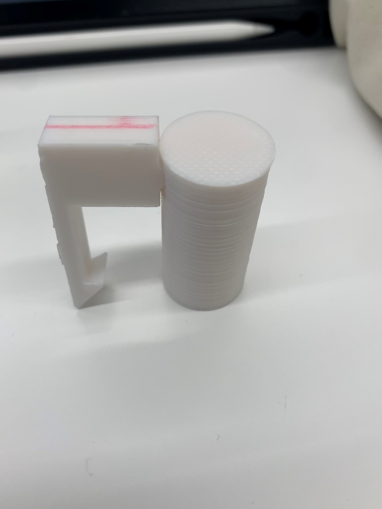

作品名 ツカダツカム
1.構想段階のスケッチ、ストーリーボード


2.設計ファイル
設計ファイルリンク
3.作品の画像

4.作品の説明
これは一見ただのペンのキャップに見えるが、通常のキャップよりフックの部分とキャップの部分の間を広げてモノをつかめるように設計した。
5.なぜこれを作ろうと考えたのか
自分がペンを使っているとき、よくフックの部分を広げて壊していて、このフックの部分が胸ポケットなどに引っ掛けられる以外に使い方はないのかを考えた時、このhフックを利用したピンセットというアイデアが浮かんだ。
6.制作プロセスの中で調べた事
ファブラボにいる佐藤さんという方に3Dプリンターの弱点みたいなのを教えてもらい、最初はキャップとフックの部分を一緒に3Dプリントしていたが、3Dプリンターは層になっていて、横からの衝撃は強いが縦からは弱くなってしまうということを言われた。佐藤さんからフックの部分とキャップを別に作って合体させれば？と言われたので作ってみたら強度が増し、よりよくなった。
*佐藤さんイメージ(写真の方は、指男さんです）

7.その他の作品
失敗作vol.1
最初に制作したもので、途中からづれてしまい写真のようになった。
失敗作vol.2
2回目に制作したもので、前回からの改善点としては穴の開いてる部分を底面にして今まで制作していたが、それでは失敗すると佐藤さんに言われ、キャップとフックがついている穴が開いていない部分を底面にして制作した。
失敗作vol.3
前回からの改善点は、横のフックとキャップの間を広げることやフックのところを太くして耐久性アップ。＋パーツを分けて作って縦からの衝撃に強いものに。しかし、横が太すぎて、ピンセットとしてモノをつかめなくなってしまった。